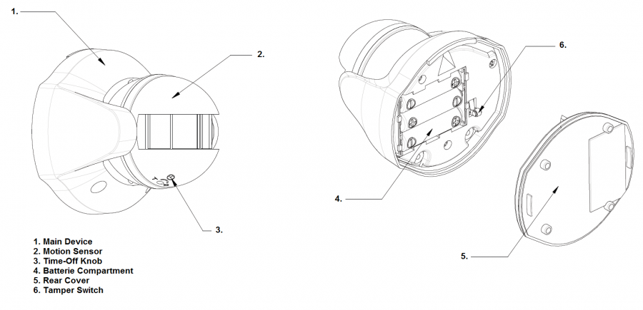

EVR_SP103
Firmware Version : 1.0 |
 |
Quick StartS This device is a Z-Wave Sensor. Single click the tamper switch behind the battery cover to include or exclude the device. Clicking the little button behind the battery cover will wake up the device and keep it awake for 10 minutes. Please refer to the chapters below for detailed information about all aspects of the products usage. |
Product description
This motion detector (PIR = passive infrared receiver) detects the presence of a person in a room. The units sends information to a controller or any other associated Z-Wave device. Up to 4 devices can be controlled from this device. It needs to be included into a Z-Wave network by a remote control or any other Z- Wave controller. For configuration of certain behaviour a static controller such as a PC with home automation software or a gateway is required. The sensor is a battery-powered device, which is in sleeping state unless an action is detected. After a programmable sleeping time the device wakes up and sends a status information. After this the unit goes back to sleeping modus. Batteries can be changed without unscrewing the device from the door or frame. The unit will give a visual warning on the device and sends a warning to the Z-Wave controller, when batteries need to be replaced. The unit offers a tampering control and sends an alarm message when tampered.
Installation Guidelines
1. Release the Sensor from the battery cover by removing the fixing screws.

2. Put the 3 * AA batteries in the battery compartment.

3. For mounting use the battery cover, which is also the mount plate, and the screws. Further fix the sensor with mount plate like shown in the picture.
The recommended position for a Motion Detector is in the corner of a room mounted 2m from the floor. At this height, the detector will detect movement up to 6-12m depending on adjustment. Also, in this position, the 100 degrees fan-shaped detection pattern can normally offer greater protection than mounting on a flat wall. Before selecting a position for a Motion Detector the following points should be noted:
Do not position the detector facing a window or direct sunlight. Motion Detectors are not suitable for use in conservatories or draughty areas.
Do not position the detector directly above or facing any source of heat, eg: fires, radiators, boiler etc.
Where possible, mount the detector so that the logical path of an intruder would cut across the fan pattern rather than directly towards the detector.

4. Set the Time-off knob, which controls how long the connected load or lamp will stay on after the motion has been detected. It is set from 5 seconds to 12 minutes. "T" means 5 seconds, while "+" is 12 minutes. After the expiry of preset time-off, the Detector will turn OFF the load. The red indicator LED on the load or the connected lamp will be off too.
Behavior within the Z-Wave network
I On factory default the device does not belong to any Z-Wave network. The device needs to join an existing wireless network to communicate with the devices of this network. This process is called Inclusion. Devices can also leave a network. This process is called Exclusion. Both processes are initiated by the primary controller of the Z-Wave network. This controller will be turned into exclusion respective inclusion mode. Please refer to your primary controllers manual on how to turn your controller into inclusion or exclusion mode. Only if the primary controller is in inclusion or exclusion mode, this device can join or leave the network. Leaving the network - i.e. being excluded - sets the device back to factory default.
If the device already belongs to a network, follow the exclusion process before including it in your network. Otherwise inclusion of this device will fail. If the controller being included was a primary controller, it has to be reset first.
Make sure that your Z-Wave Controller is in the Inclusion-/Exclusion-Mode. Sinlge click the little button behind the battery cover to confirm the process.
Operating the device
The Motion Detector is designed to detect movement in a protected area by detecting changes in infra-red radiation levels caused, for example, when a person moves within or across the devices field of vision, a trigger radio signal will be transmitted.
In the rear casing, there is a tamper switch which is used to carry out inclusion, exclusion or association. Put a Z-Wave Wireless Controller into inclusion/exclusion mode, press the tamper switch on the detector to complete the inclusion/exclusion process. The Motion Detector will stay "awake" for ten minutes when changing the status of tamper switch from being pressed to be released or from being released to be pressed to allow time for configuration.
1. With the tamper switch not being pressed, the unit enters test mode, which allows the user to make a test. When the movement has been detected, the red indicator LED on the Detector will illuminate and the load or the lamp will turn ON. It implies that the unit is working properly.
Note: When the battery is connected, the LED behind the lens will be on for about 1 minute as warming-up duration until the Motion Sensor has stabilized when the LED turns OFF.
2. When the tamper switch is pressed, the unit will enter normal mode. Upon motion being sensed, the Detector will turn ON the connected load. After the elapse of preset time-off, the Detector will turn OFF the load. In normal mode with the tamper switch being pressed, the red indicator LED on the Detector will not illuminate to conserve battery life when the detector is triggered, (unless the battery is low).
3. By pressing the tamper switch for more than 5 seconds, and then release it. The Detector will send an alarm command to the Module. The load or the lamp will flash for 10 seconds.
Wakeup Intervals - how to communicate with the device?
W This device is battery operated and turned into deep sleep state most of the time to save battery life time. Communication with the device is limited. In order to communicate with the device, a static controller C is needed in the network. This controller will maintain a mailbox for the battery operated devices and store commands that can not be received during deep sleep state. Without such a controller, communication may become impossible and/or the battery life time is significantly decreased.
This device will wakeup regularly and announce the wakeup state by sending out a so called Wakeup Notification. The controller can then empty the mailbox. Therefore, the device needs to be configured with the desired wakeup interval and the node ID of the controller. If the device was included by a static controller this controller will usually perform all necessary configurations. The wakeup interval is a tradeoff between maximal battery life time and the desired responses of the device.
Single click on the tamper switch behind the battery cover or a detected action by the sensor will wake up the device and keep it awake.
It is possible to set the node ID to 255 to send wakeup notifications as broadcast. In this mode device takes more time to go to sleep and drains battery faster, but can notify all it's direct neighbors about a wakeup.
Node Information Frame
NI The Node Information Frame is the business card of a Z-Wave device. It contains information about the device type and the technical capabilities. The inclusion and exclusion of the device is confirmed by sending out a Node Information Frame. Beside this it may be needed for certain network operations to send out a Node Information Frame.
Sinlge click on the tamper switch behind the battery cover or a detected action by the sensor sends a Node Information Frame.
Associations
A Z-Wave devices control other Z-Wave devices. The relationship between one device controlling another device is called association. In order to control a different device, the controlling device needs to maintain a list of devices that will receive controlling commands. These lists are called association groups and they are always related to certain events (e.g. button pressed, sensor triggers, ...). In case the event happens all devices stored in the respective association group will receive a common wireless command.
Association Groups:
| 1 | Triggered (max. nodes in group: 5) |
Configuration Parameters
Z-Wave products are supposed to work out of the box after inclusion, however certain configuration can adapt the function better to user needs or unlock further enhanced features.
IMPORTANT: Controllers may only allow to configure signed values. In order to set values in the range 128 … 255 the value sent in the application shall be the desired value minus 256. For example: to set a parameter to 200 it may be needed to set a value of 200 minus 256 = minus 56. In case of two byte value the same logic applies: Values greater than 32768 may needed to be given as negative values too.
| Value | Description |
|---|---|
| 0 | Set Off (Default) |
| 1 — 96 | Set On |
| 97 — 239 | Set On to the last Dimmer phase |
| Value | Description |
|---|---|
| 0 | Disabled |
| 1 — 255 | Enabled (Default 1) |
Technical Data
| Battery Type | 3 * AA |
| Explorer Frame Support | No |
| SDK | 4.22 |
| Device Type | Slave with routing capabilities |
| Generic Device Class | Binary Sensor |
| Specific Device Class | Routing Binary Sensor |
| Routing | No |
| FLiRS | No |
| Firmware Version | 1.0 |